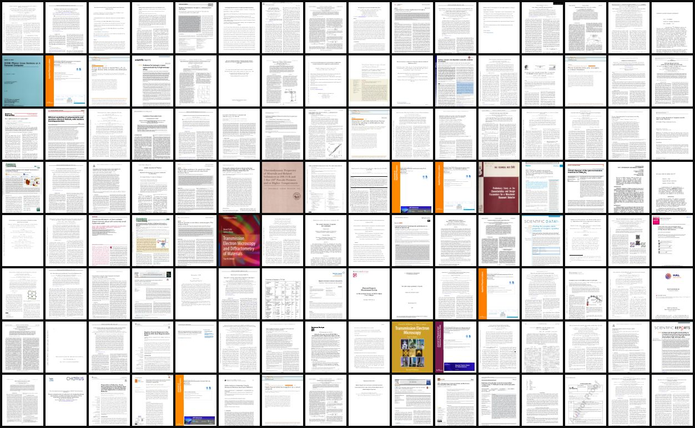

One command searches for papers, downloads the ones it can get, and writes an answer that cites every number. The papers it can't get come back to me as a short list.
claude
> /lit-fetch how GRCop-42 and GRCop-84 compare for additively manufactured rocket combustion chambers
The command I typed, word for word. Everything below came back from it.
1 · The question
GRCop-42 and GRCop-84 are NASA copper alloys made for the cooled inner walls of rocket engines. Which one should go in a 3-D printed combustion-chamber liner? I picked this question because it is a real design choice with good published data behind it.
2 · What came back on its own
10relevant papers found
6downloaded and read
207values plotted, each traced to a table, page or figure
4handed back to me
GRCop-42. GRCop-84 is stronger below about 600 °C, but the two are matched above that. GRCop-42 conducts 5 to 20 % more heat and prints about 20 % faster, and NASA moved to it for its printed chambers (Gradl et al., 2019).
Thermal conductivity of wrought alloys, read off NASA's published curves (Gradl et al., 2019, Fig. 1). GRCop-42 sits 13 to 20 % above standard GRCop-84. This is Figure 3 of the write-up.
The write-up has the full answer: an alloy-by-property table with test conditions, five figures, and a list of every plotted value with where it sits in its paper. It also says where the papers disagree and which gap is still open.
When a paper is paywalled or the publisher's site blocks scripts, Claude stops and hands me the DOI. It does not try to get around a login or a bot check.
Then I ask the question again. Claude finds the new PDFs in the library, reads them, and writes the answer with them included. For this question, one of the four came in on the second try; the other three need a library request.
How it works
Claude runs the five steps. The branch shows where it sends me the DOIs for papers I need to retrieve myself.
Search. Claude searches OpenAlex, an open index of scholarly papers, and ranks the results by citation count, with priority given to open-access copies.
Check the library. Claude looks for a copy in my library before downloading anything.
Download. Claude checks Unpaywall, arXiv, and OpenAlex for an open-access copy, then checks for licensed access through the publisher's text-mining service.
Extract the text. A script extracts text from each PDF on my computer. The PDFs stay in my local library.
Draft a note. Claude writes one page on how each new paper relates to my project.
A script checks each PDF for expected terms to catch download mix-ups. The notes trace numbers back to a page, table, or figure, and a second script checks each new note. The summaries below flag when the evidence comes from a simulation or when I only have the abstract.
For a question like the GRCop one, Claude then records each value it uses with its paper, table or figure, and test condition. Where a paper only gives a plot, a script reads the curve from the PDF's vector drawing. The write-up plots only those records.
The library
As of November 2026, I use the same library of more than 2,000 papers across three projects.

128 first pages from my library, November 2026.
Run summary for the GRCop question
claude
> /lit-fetch how GRCop-42 and GRCop-84 compare for additively manufactured rocket combustion chambers
● Searching OpenAlex, five queries.
└ GRCop-42 · GRCop-84 · GRCop additive · Cu-Cr-Nb additive manufacturing · Cu-Cr-Nb combustion chamber
10 candidates kept
● Downloading, extracting and writing notes.
└ 6 papers read and summarized (two of the PDFs are accepted manuscripts)
● Taking the numbers.
└ 34 values from tables, 7 from the text, 166 read off digitized figures
● Done. 6 papers read, 4 handed back:
10.1007/s11665-007-9175-3 closed
10.2514/6.2021-3233 closed
10.1080/15361055.2022.2147765 listed open access, download failed
10.1080/09506608.2020.1821485 listed open access, download failed
An earlier example: ten papers on piezo velocity control
I tried this on a question from my spectrometer work. The source in a Mössbauer spectrometer has to move at a precisely controlled velocity. Our group drives it with a piezo stack (Guzman et al., 2023). I wanted to see which methods from atomic force microscopy and other fields might help us control that motion.
The search returned 160 candidates. Claude picked ten papers. Four were already in my library, four downloaded automatically, and two needed my help. One was behind a paywall, and the other needed a browser download. My notes record which parts Claude read, the evidence behind the key numbers, and what I can use in my project. The titles link to the papers.
The authors used iterative learning control to reduce hysteresis error to the sensor's noise floor. They drove the piezo at 1 Hz or less, well below its 445 Hz resonance, to isolate hysteresis from the scanner's dynamics. A Mössbauer drive runs closer to resonance.
With charge control, the piezo's open-loop hysteresis error fell below 1% on a 1 Hz triangle scan without a position sensor. A slow feedback loop can then correct drift.
2013 · Review of Scientific Instruments · Open access
The authors drove a lever-amplified piezo scanner with a triangle wave at up to about 1 kHz in open loop. They kept the harmonics the scanner could follow and used its measured frequency response and a hysteresis model to shape the input. The same steps could help shape a piezo velocity waveform.
Paywalled Library request
2014 · IEEE/ASME Transactions on Mechatronics · Manual download
Abstract only. I need to request the full paper through the library. Of these ten papers, this is the only one that directly analyzes piezo velocity control. It looks at stability under Coulomb friction and uses an inverse model to choose the input for a target velocity.
2016 · IEEE Transactions on Industrial Electronics · Open access
When the amplifier saturated, the periodic tracking controller wound up and the stage stopped following the target motion. A repeating drive waveform could run into the same problem if it clips at the turnaround. The authors' anti-windup compensator held the tracking error under 0.23% at about 250 Hz bandwidth.
Open access Browser download
2020 · IEEE/ASME Transactions on Mechatronics · Manual download
Abstract only. The open-access PDF needs to be downloaded in a browser. The authors drove a resonant piezo motor at two frequencies to get smooth, quiet motion. They report positioning error below 10 nm from 1 down to 0.001 mm/s.
Simulation. The authors compared positive position feedback, integral resonant control, and H-infinity control on a 100 µm triangle at 5 to 20 Hz. Added mass shifted the resonance from 205 to 139 Hz. H-infinity tracked best in every case tested in the simulations.
2023 · Review of Scientific Instruments · In my library
With strain-gauge feedback, our group's piezo Mössbauer drive matched the linewidth of a conventional electromagnetic drive and stayed linear within 3.5%. The authors suspect some of the remaining distortion comes from inferring source motion from strain measured on the stack. A direct measurement of source motion could test that.
This was the only Mössbauer drive I found that uses iterative learning control. A voice coil followed a jerk-limited triangle at 25 Hz using proportional feedback and a learned feedforward signal. The velocity fit reached R² = 0.996. The control scheme is what I'd look at for a piezo drive.
The authors ranked the effects of offset (up to 30%), amplitude (up to about 25%), hysteresis (5 to 10%), and frequency (1 to 2%) on open-loop piezo positioning. A feedforward correction for all four improved positioning about tenfold without adding hardware. For a drive that changes velocity range, I'd start the calibration with offset and amplitude.